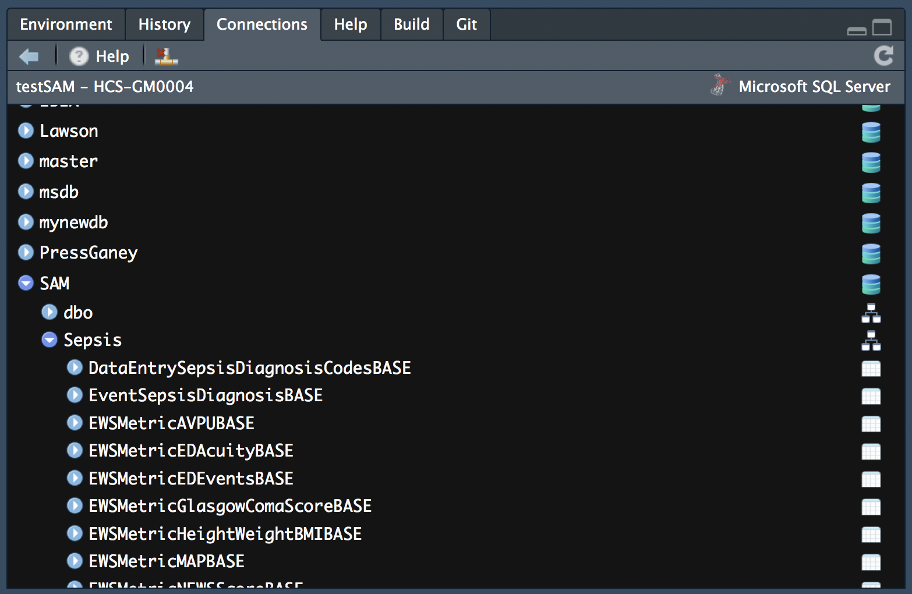

db_connections.RmdLet’s be honest. You need to get data from a database, do some really awesome stuff with R, and then write the results back to a database. RStudio (and R) can help with that. There are lots of different databases, but this document will focus on Microsoft SQL Server. RStudio supports most databases, and I’d encourage you to look at the db help pages for additional resources. Andiamo!
If you simply want a code snippet to copy and paste, scroll to the bottom.
Before you can do anything, you must make a connection to your database. The build_connection_string function takes care of the syntax for you and returns a connection string that’s ready to be passed into dbConnect. After you have a valid connection, you should be able to browse the database using RStudio’s Connections pane. If you don’t have a connections pane, upgrade your RStudio. It’s worth it.
library(healthcareai)
library(DBI)
my_con <- build_connection_string(server = "HCS-GM0004",
database = "SAM")
con <- dbConnect(odbc::odbc(), .connection_string = my_con)Your database connection is now stored in the object, con. You can use it in database functions that require a connection. dbConnect will create a persistent connection, meaning that it’s available until you disconnect. If you have a recent version of RStudio, you’ll see the connections pane has updated as well.

Each database, schema, and table is available as a drop down menu for exploration. Clicking the button in the far right column next to a table will bring up a preview of the top 1000 rows of the table.
From here, you can read data from the database in a couple different ways. You can use db_read to execute SQL code, or you can use dbplyr functionality to execute dplyr code directly against the database.
query <- "SELECT
,COUNT(*),
,year(AdmitDT) as AdmitYear
FROM [SAM].[Encounter].[PatientEncounterBASE]
WHERE AdmitYear >= 2013
GROUP BY AdmitYear
ORDER BY AdmitYear"
d <- db_read(con, query)This query counts admits by year. If you don’t want to pull the results into memory, as might the be the case with large tables, set the pull_into_memory flag to FALSE. This will create a pointer to the database that can be executed “lazily.” In other words R will wait until the last moment to execute the statement.
The other option is to use dplyr code. Set up a reference to the table, then use it to pull data. Here, tbl is creating a reference and storing it in the encounter object. R will treat that object like a data frame and can filter, aggregate, join, etc using R or dplyr code. The last line, collect(), is what actually pulls the data into memory. Be sure to first install.packages('tidyverse')
library(tidyverse)
encounter <- tbl(con, in_schema("Encounter", "PatientEncounterBASE"))
d <- encounter %>%
mutate(AdmitYear = year(AdmitDT)) %>%
filter(AdmitYear >= 2013) %>%
group_by(AdmitYear) %>%
tally() %>%
collect()See here for help with joins using dplyr.
Note: the odbc/DBI route doesn’t work as of 4/18
As of 4/1/2018, there are two ways to write to a database:
The latest version of odbc, and DBI, installed from Github. The CRAN version does not support database schemas.
RODBC
In either case, the data you are trying to write must match the destination table’s column names and data types. To create the table, you use a CREATE TABLE statement in a tool like SSMS (or SAMD, if in the Health Catalyst environment).
This code assumes there is a table called SAM.Sepsis.Predictions with columns:
While it’s the route that works (as of April 18th), RODBC won’t be the preferred way to interact with a database long-term because it doesn’t work with RStudio’s connections pane. However, the package is available on CRAN and does support schemas.
library(RODBC)
# Make a connection
my_con <- build_connection_string(server = "HCS-GM0004",
database = "SAM")
con <- odbcDriverConnect(connection = my_con)
# Write data (normally this would come from predict)
predictions <- data.frame(patient_id = c(1,2,3),
predicted_readmission = c(0.7, 0.2, 0.4)) %>%
add_SAM_utility_cols() # if in Health Catalyst environment
sqlSave(con,
predictions,
"Sepsis.Predictions",
append = TRUE,
rownames = FALSE)
odbcClose(con)If you’re confused, this is all explained above.
library(healthcareai)
library(DBI)
library(RODBC)
# Connection string
my_con <- healthcareai::build_connection_string(server = "HCS-GM0004",
database = "SAM")
con_in <- DBI::dbConnect(odbc::odbc(), .connection_string = my_con)
# Reading
query <- "SELECT
,COUNT(*),
,year(AdmitDT) as AdmitYear
FROM [SAM].[Encounter].[PatientEncounterBASE]
WHERE AdmitYear >= 2013
GROUP BY AdmitYear
ORDER BY AdmitYear"
d <- healthcareai::db_read(con_in, query)
# Writing
predictions <- data.frame(patient_id = c(1,2,3),
predicted_readmission = c(0.7, 0.2, 0.4))
con_out <- RODBC::odbcDriverConnect(connection = my_con)
RODBC::sqlSave(con_out,
predictions,
"Sepsis.Predictions",
append = TRUE,
rownames = FALSE)
DBI::dbDisconnect(con_in)
RODBC::odbcClose(con_out)